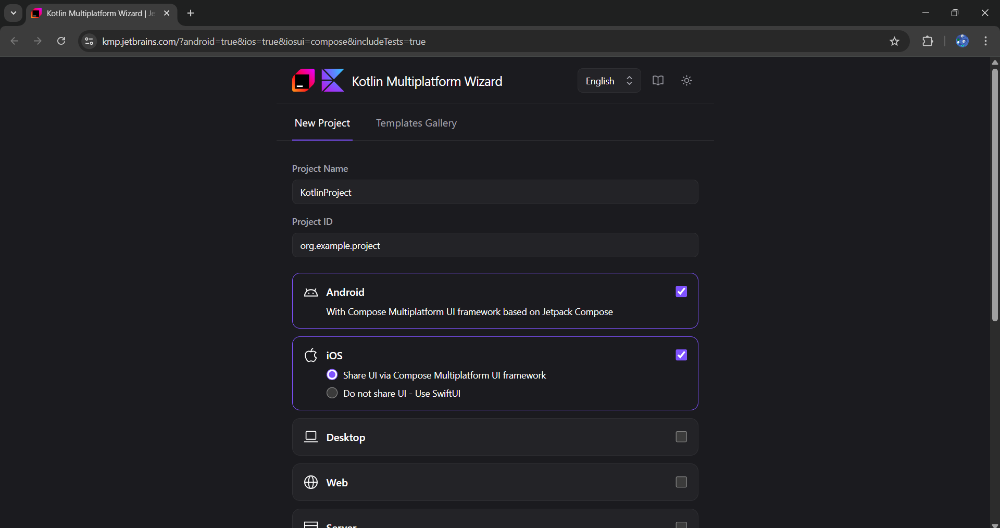
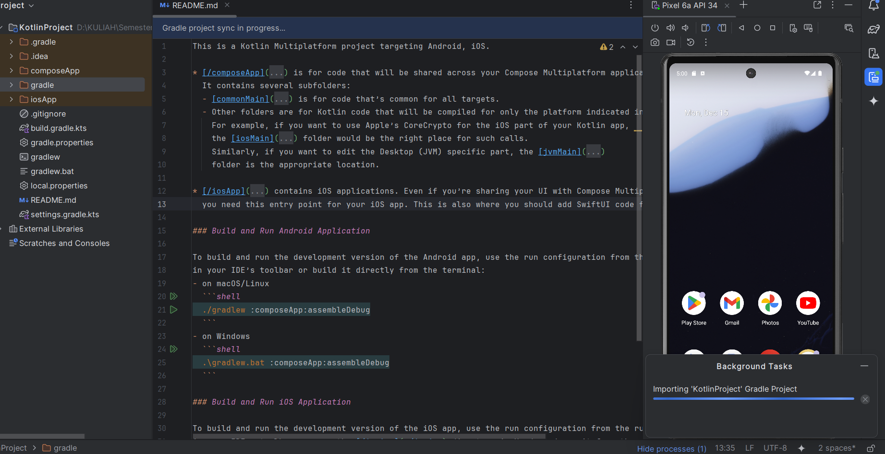
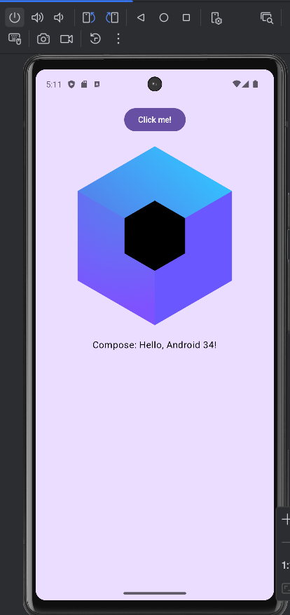
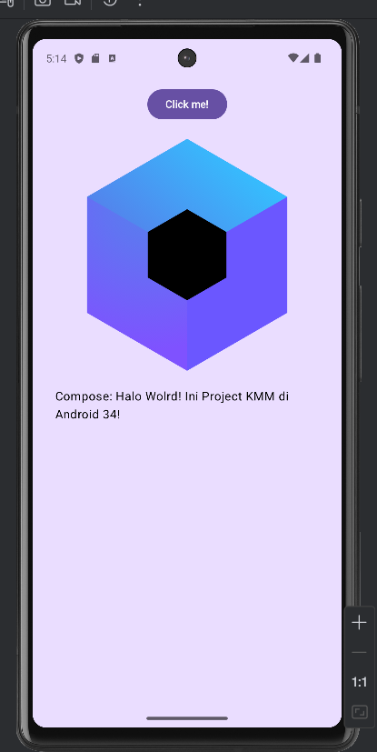

Instalasi Kotlin Multiplatform (KMM)
1 Persiapan Tools (Download & Install)
Pastikan kamu sudah punya 2 hal ini:
-
JDK (Java Development Kit) Versi 17: KMP dan
Android Studio terbaru paling stabil berjalan dengan Java 17. Cek
di terminal:
java -version. Kalau belum punya, download Eclipse Temurin JDK 17 (LTS). - Android Studio (Terbaru): Pastikan sudah di-update ke versi terbaru (Ladybug atau Meerkat) agar kompatibel dengan plugin Kotlin terbaru.
2 Install Plugin Kotlin Multiplatform (Khusus Mac/Opsional)
Jika kamu menggunakan Windows, plugin ini mungkin muncul status "Not available for Windows". Jangan panik! Ini normal. Kamu bisa SKIP (LEWATI) langkah nomor 2 ini dan langsung lanjut ke langkah 3. Android Studio kamu sudah siap coding KMP tanpa plugin ini.
Jika kamu menggunakan macOS (atau ingin fitur iOS di Android Studio), ikuti cara ini:
- Klik menu Settings (atau Ctrl + Alt + S).
- Pilih menu Plugins.
- Di tab Marketplace, cari dan install: Kotlin Multiplatform.
- Restart Android Studio jika diminta.
3 Membuat Project (Cara Paling Anti-Gagal)
Jangan buat project lewat menu "New Project" di Android Studio (sering error template lama). Cara paling stabil saat ini adalah lewat Web Wizard resmi JetBrains.
Buka browser, kunjungi: kmp.jetbrains.com
Isi formnya:
- Project name: HelloWorldKMP
- Project ID: com.example.helloworld
- Platforms: Centang Android dan iOS. (Biarkan Server dan Desktop kosong dulu biar sederhana).
- iOS framework distribution: Pilih CocoaPods (ini standar umum) atau Regular framework.
Klik tombol Download. Kamu akan dapat file .zip. Ekstrak file tersebut di folder tempat yang kamu inginkan.
4 Buka dan Sync Gradle
Buka Android Studio. Pilih Open dan cari folder
HelloWorldKMP yang tadi diekstrak.
SABAR. Ini bagian paling krusial.
Saat pertama kali dibuka, Android Studio akan mendownload Gradle dan library Kotlin yang cukup besar. Lihat progress bar di pojok kanan bawah. Tunggu sampai tulisan "Indexing" selesai dan struktur folder muncul.
5 Memahami Struktur (Bedanya sama Flutter)
Di panel kiri (Project View), ubah tampilan dari "Android" ke "Project" agar terlihat semua foldernya. Kamu akan melihat 3 folder utama:
- 📂 androidApp: Ini kodingan khusus UI Android (pakai Jetpack Compose).
- 📂 iosApp: Ini kodingan khusus UI iOS (pakai SwiftUI).
-
📂 shared: INI INTI APLIKASI. Logika bisnis yang
dipakai bareng-bareng ada di sini (folder
commonMain).
6 Run "Hello World"
Karena kamu di Windows, kita run yang Android:
- Di toolbar atas (tempat run configuration), pilih androidApp.
- Pilih emulator Android yang tersedia (misalnya Pixel 5).
- Klik tombol Run (▶️).
Aplikasi akan terbuka menampilkan tulisan standar (biasanya: "Hello, Android X!").
7 Modifikasi "Hello World" (Challenge)
Mari kita ubah teksnya. Ingat, logika teks ini ada di Shared Module.
Buka file:
shared > src > commonMain > kotlin > com.example.helloworld >
Greeting.kt.
Kamu akan melihat fungsi greet(). Ubah return-nya,
misalnya:
class Greeting {
package org.example.project
class Greeting {
private val platform: Platform = getPlatform()
fun greet(): String {
return "Halo Wolrd! Ini Project KMM di ${platform.name}!"
}
}
}Run ulang (klik tombol run hijau). Lihat di Emulator Android, teksnya akan berubah!
